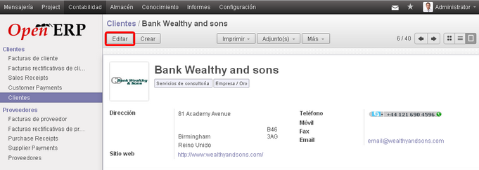
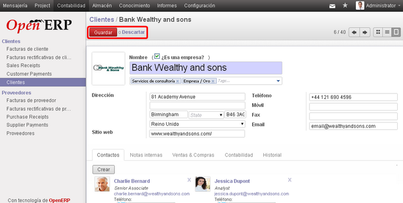

El botón Editar permite modificar características de un cierto objeto. Por ejemplo si estamos en el modo edición del algún cliente se podrá modificar su nombre, dirección, teléfono, etc. En el ángulo superior izquierdo de las vistas Formulario se encuentra el botón Editar.

Una vez que se ingresó en el modo edición del objeto, en el ángulo superior izquierdo de la vista Formulario se encuentran los botones de Guardar y Descartar.
El botón Guardar permite guardar las modificaciones realizadas en un registro. Si estamos en el formulario de un cliente y cambiamos su nombre, no se guarda hasta pulsar este botón. Si hemos modificado un registro y cambiamos de pantalla, el sistema avisa que no hemos guardado.
El botón Descartar permite deshacer los cambios, y salir de la vista formulario sin guardar.
